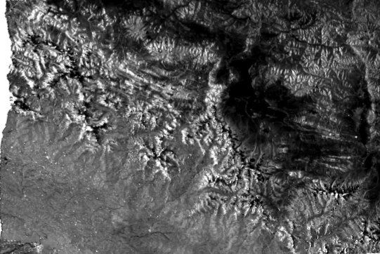
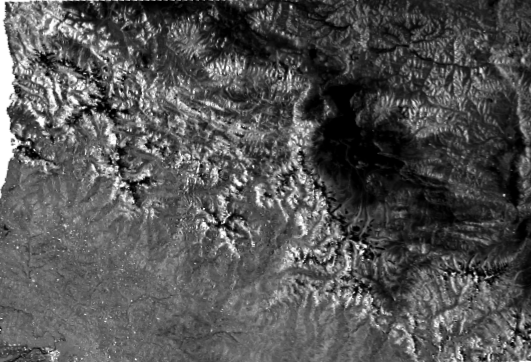

NASA SPACE APPS CHALLENGE 2026 / DANCING WITH THE SARS
See Change.
Understand Floods.
A clearer view of our changing planet. Explore real Sentinel-1 radar observations through a simple, interactive before-and-after comparison.
02SAR observations
12Days apart
30 mPixel spacing
SCROLL TO EXPLORE ↓
01 / EXPLORE THE DATA
One place. Two moments.
Move the slider to compare two processed Sentinel-1 SAR images of Rasuwa, Nepal. The comparison helps reveal visual differences between observations.
⌖
STUDY AREARasuwa, Nepal
RADAR IMAGE COMPARISON
PROTOTYPE VIEWER

After imageAdd assets/after.png

Before imageAdd assets/before.png
‹ │ ›
Scientific note: These images demonstrate SAR processing and visual comparison. Differences in radar appearance alone do not confirm that a flood occurred. Automated flood classification and independent validation are future work.
02 / BEHIND THE IMAGES
From satellite to screen.
Our prototype uses real radar imagery and a transparent, reproducible workflow.
01 ↗
Choose the area
We selected Rasuwa district in Nepal as our study area.
02 ↗
Find SAR data
We discovered Sentinel-1 scenes from August 16 and 28, 2026 using ASF Vertex.
03 ↗
Process imagery
We processed both acquisitions with ASF HyP3 RTC GAMMA at 30 m pixel spacing.
04 ✓
Compare visually
We visualized and exported the scenes using QGIS for comparison in FloodLens.
SAR
RADAR OBSERVATION / DAY + NIGHT03 / THE SCIENCE
Why look with radar?
Synthetic Aperture Radar (SAR) satellites transmit radar signals and measure their reflections from Earth’s surface. Unlike optical imagery, SAR can observe the surface at night and through cloud cover.
Water and other land surfaces can reflect radar signals differently, making SAR useful for investigating possible flood-related changes. Careful analysis and reference data are still required to confirm flooding.
Learn more at NASA Earthdata ↗04 / WHAT'S NEXT
Building beyond the prototype.
Today, FloodLens is a visual comparison tool. These capabilities are planned for future development—not features of the current demo.
Automated data discovery
NASA Earthdata CMR and ASF Search API integration.
On-demand processing
Python, FastAPI, and ASF HyP3 API workflows.
Interactive mapping
Leaflet maps with PostgreSQL and PostGIS data storage.
Validated change analysis
Flood classification, verification, and potential alerts.
05 / THE PEOPLE BEHIND FLOODLENS
Built by Team Bonyan.
Created for NASA Space Apps Challenge 2026 — Dancing with the SARs.
Aseel Qadan
Yazan Saadeh
Maryam Aboushi
Bayan Abubshara
Sadeq Othman
Dania Mohammed
DATA & SCIENTIFIC RESOURCES